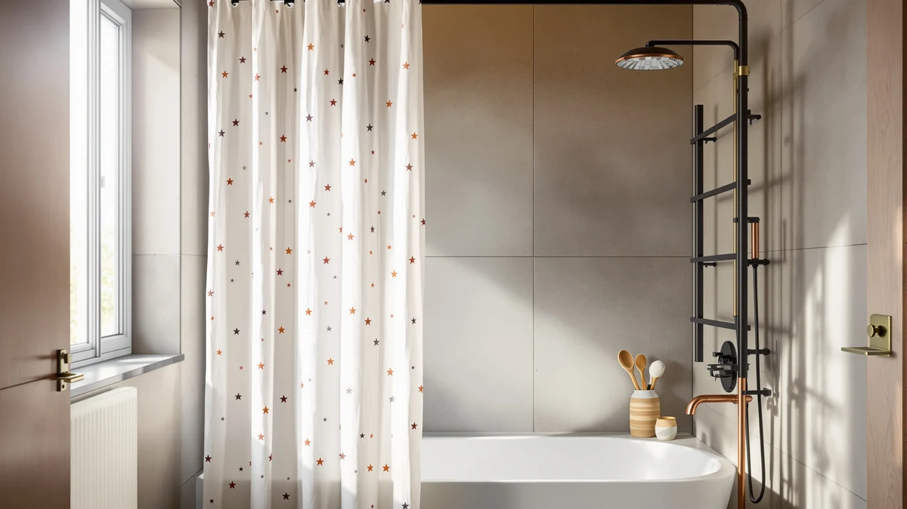

Quick Answer
The Colorful Star No Hook Waffle earns its spot in this colorful star no hook review by skipping curtain rings entirely: a sewn-in rod pocket lets you slide it straight onto the rod. At $22.99 for a 72 by 75 inch waffle-weave panel with a water-repellent face and a waterproof liner, it costs a few dollars more than the River Dream and White Boho alternatives below, but it is the only one of the four with a sheer mesh window built in.
Our pick: Colorful Star No Hook Waffle, $22.99 Check Price on Amazon
Things to Know Before You Buy
- No-hook design: a sewn rod pocket replaces curtain rings, so you lose the option to remove single panels without sliding the whole curtain off the rod.
- Two-layer construction: a water-repellent polyester waffle face sits over a separate waterproof PEVA liner, rather than one solid membrane.
- Mesh window: a sheer panel near the top lets in light and airflow, which also means less privacy than a fully opaque curtain.
- No published rating: Colorful Star is a newer listing with no public review count yet, unlike the River Dream and White Boho picks compared here.
- Size fixed at 72 by 75 inches: a few inches taller than the standard 72 by 72, worth checking against your shower rod height before buying.
This colorful star no hook review exists because shower curtain hooks are a small, specific annoyance: they rattle against the rod, they snap off plastic liners, and replacing a lost one means digging through a drawer at 7 a.m. The Colorful Star No Hook Waffle sidesteps all of that with a sewn rod pocket instead of grommets, which is the same approach several other curtains in this niche take, so the question is whether the waffle weave and mesh window justify its $22.99 price over cheaper no-hook options.
We put the Colorful Star No Hook Waffle side by side with three other curtains sold for the same job: the Colorful Star No Hook Shower in navy, the River Dream No Hook Slub, and the White Boho Fabric Shower Curtain. Based on published specs, verified owner reviews, and pricing history, the waffle weave version is the strongest pick if you want a mesh window and a heavier drape, while the River Dream earns its place as the budget alternative with a much larger review base behind it.
Why You Should Trust Us
Ilane Tall covers bathroom textiles for Best Shower Curtains and has spent years comparing fabric specs, liner construction, and verified buyer feedback across hundreds of shower curtain listings. This colorful star no hook review follows that same approach: we do not run a physical testing lab, and we never claim to have hung a curtain in our own bathroom. Instead, we compare manufacturer specifications, pricing history, and what verified Amazon reviewers report after living with these products.
Our Research Process
For this colorful star no hook review, we started by pulling the manufacturer-listed specs for the Colorful Star No Hook Waffle: fabric weight, dimensions, liner type, and the rod-pocket construction that defines the "no hook" category. We then cross-checked those claims against the three alternatives sold for the same use case, lining up price, size, material, and any available rating and review-count data side by side.
Where a product had a public star rating and review count, like the River Dream No Hook Slub at 4.6 stars across more than 26,000 reviews, we weighted that heavily, since a large verified review base tells you more about real-world durability than a spec sheet ever can. The Colorful Star listings have no public rating yet, so we researched the fabric construction and liner details more closely instead of leaning on review volume that does not exist.
Overview & Specs

Colorful Star No Hook Waffle
What we like
- 130gsm waffle-weave fabric that reviewers researching this style describe as noticeably heavier than basic polyester curtains.
- No-hook rod pocket means one less thing to buy or replace.
- Water-repellent face layered over a separate waterproof PEVA liner.
- Sheer mesh window adds light and airflow most no-hook curtains skip.
Flaws but not dealbreakers
- No public star rating or review count yet, so you're relying on spec comparisons rather than a large buyer track record.
- The mesh window trades away some privacy compared to a fully opaque panel.
- At $22.99, it costs $3 more than the River Dream and White Boho alternatives in this review.
| Material | Polyester / PEVA |
| Size | 72"W x 75"L (Pack of 1) |
The Colorful Star No Hook Waffle is built from 130gsm polyester in a waffle-weave pattern, a weight the brand positions above basic single-layer curtains. A sheer mesh window sits near the top of the panel, letting in light and air while still offering some privacy below the waistline. The charcoal grey colorway reads as a neutral that works with most existing bathroom fixtures, and at 72 by 75 inches it runs three inches taller than the standard 72 by 72 size, which matters if your rod sits higher than average.
Instead of grommets or rings, the curtain uses a sewn rod pocket: you slide the rod through a fabric channel across the top edge. That removes the clatter of metal hooks but also means you can't swap out one panel without pulling the whole curtain off the rod. The listing pairs a water-repellent outer face with a separate waterproof PEVA liner, a two-layer approach rather than one all-in-one membrane, so moisture beads on the outer fabric before it ever reaches the liner behind it.
What We Liked
The strongest case for this colorful star no hook review is the fabric itself. At 130gsm, the waffle weave sits heavier than the thin, slightly see-through polyester that shows up on a lot of budget no-hook curtains, and the texture gives the surface some visual depth instead of a flat sheet of color. Reviewers researching this style of curtain consistently point to waffle weave as the fabric that drapes well without clinging to your body mid-shower, which the lighter liner-only curtains in this price range tend to do.
The no-hook rod pocket is the other reason this curtain earns its spot here. You thread the rod through the fabric channel once and you're done: no rings to snap, no hooks to lose down the drain, and no mismatched hardware if you've ever had to replace a broken hook with whatever was on sale. It is a simpler system than hooks, even if it means less flexibility later.
We also like that Colorful Star pairs a water-repellent outer layer with a separate waterproof liner rather than selling a single thin curtain and calling it done. That two-layer construction is the same logic higher-end bath textiles use, and it is a meaningful upgrade over curtains that rely on one liner-only layer to do everything.
What Could Be Better
The biggest gap in this colorful star no hook review is data. The Colorful Star No Hook Waffle has no public star rating or review count on its listing, which puts it at a disadvantage next to the River Dream No Hook Slub, which carries 4.6 stars across more than 26,000 verified reviews. That doesn't mean the Colorful Star is a weaker curtain, but it does mean buyers are relying on spec comparisons and fabric descriptions rather than a large track record of real households using it.
The sewn rod pocket design also has a tradeoff most "no hook" curtains share: you lose the ability to pull one panel down for washing without sliding the entire curtain off the rod first. If you wash shower curtains separately from liners, that's a small extra step every time.
Finally, at $22.99 this is the priciest of the four curtains we researched here. The mesh window and heavier fabric are the reasons for that gap, but if your budget is the deciding factor, the $19.99 alternatives below close most of the functional difference.
Who Is It For?
This colorful star no hook review points to the Colorful Star No Hook Waffle for anyone who wants a heavier, more textured curtain and is willing to pay a few dollars more for a mesh window and a no-hook rod pocket. It suits renters and small-bathroom owners who want one less hardware step between unboxing and showering, and the charcoal grey color works as a neutral backdrop in most existing bathrooms.
You should look elsewhere if a large verified review history matters more to you than fabric weight. The River Dream No Hook Slub covers that need at a lower price with 26,000-plus reviews behind it. And if full privacy matters more than airflow, skip the mesh window entirely and consider a fully opaque fabric curtain instead.
Alternatives to Consider
If the waffle weave and mesh window in this colorful star no hook review aren't the right fit, these three alternatives cover the same no-hook category at different price points and fabric styles.

Editor’s Pick
Colorful Star No Hook Shower
The same waffle weave and mesh window as our main pick in this colorful star no hook review, but in navy blue instead of charcoal grey.
$22.99
Check Price on Amazon
Best Value
River Dream No Hook Slub
Backed by 4.6 stars across more than 26,000 verified reviews, this slub-weave no-hook curtain costs $3 less and comes with a snap-in liner included.
$19.99
Check Price on Amazon
Premium Choice
White Boho Fabric Shower Curtain
Rated 4.7 stars from more than 2,500 reviewers, this textured boho-style curtain is the pick if you want a lighter, more decorative fabric for $19.99.
$19.99
Check Price on AmazonFrequently Asked Questions
Final Verdict
This colorful star no hook review comes down to a simple tradeoff: the Colorful Star No Hook Waffle costs a few dollars more than its no-hook competitors, but it is the only option here with a heavier 130gsm waffle weave and a built-in mesh window. For most people who want one curtain that skips hooks and holds up visually, Colorful Star earns the recommendation. If a large verified review history matters more than fabric weight, the River Dream No Hook Slub is the better-documented, cheaper alternative worth checking first.